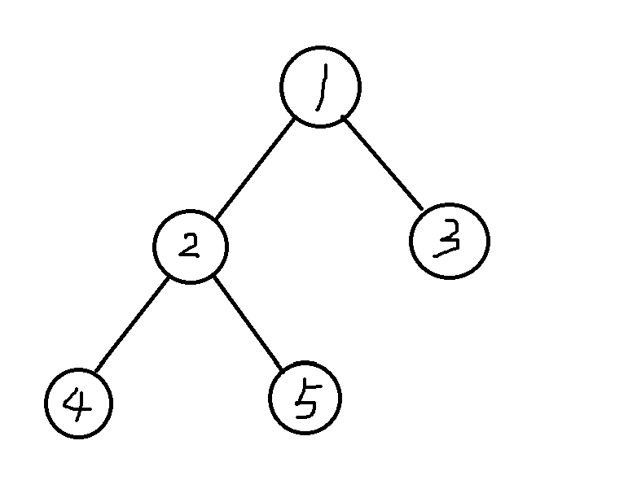

AtCoder ABC 477
C. Range Search Query
Problem Statement
You are given strings
and .
Processqueries.
In each query, you are givenand . Determine whether the substring of consisting of the -th through -th characters contains as a substring. What is a substring? A substring of
is a string obtained by deleting zero or more characters from the beginning and zero or more characters from the end of .
For example,abis a substring ofabc, butacis not a substring ofabc.Constraints
is a string of length between and , inclusive, consisting of lowercase English letters.
is a string of length between and , inclusive, consisting of lowercase English letters.
are integers.
因为
using namespace std;int main(){ int q; cin>>q; string s,t; cin>>s>>t; vector<int> st(s.length()+1,0); for(int i=0;i<s.length();i++){ bool flag=1; for(int j=0;j<t.length();j++) if(s[i+j]!=t[j]){ flag=0;break; } if(flag)st[i+1]=st[i]+1; else st[i+1]=st[i]; } while(q--){ int l,r; cin>>l>>r; if(r-l+1<t.length())cout<<"No\n"; else { if(st[r-t.length()+1]>st[l-1])cout<<"Yes\n"; else cout<<"No\n"; } } return 0;}D. Masking Tape
Problem Statement
There are
squares arranged in a horizontal row, numbered square to square from left to right. Colors are represented by lowercase English letters. Initially, the color of every square is
a, and nothing is placed on any square.You are given
queries; process them in the given order. Each query is of one of the following two types:
1 X: If no tile is placed on square, place a tile on it; if a tile is placed on it, remove it.
2 C: Change the color of every square on which no tile is placed to. Find the color of each square after processing all queries (regardless of whether a tile is placed on it).
Constraints
Each query is of type
or type . In type-
queries, is an integer satisfying . In type-
queries, is a single lowercase English letter.
看着像数据结构题，但分析发现颜色其实和后面的操作关系更大，前面的操作很容易被覆盖了。所以记录操作的总次数和当前某个位置经历了多少次操作，与实时应该更改的颜色即可。
xxxxxxxxxxusing namespace std;int main(){ int n,q; cin>>n>>q; string c(n,'a'); vector<int> st(n,0); vector<bool> t(n,false); //揭开砖不改变颜色 char cur='a'; int ver=0; while(q--){ int op; cin>>op; if(op==1){ int x; cin>>x; --x; if(!t[x]){ if(st[x]!=ver)c[x]=cur; st[x]=ver,t[x]=true; }else st[x]=ver,t[x]=false; }else{ cin>>cur; ++ver; } } for(int i=0;i<n;i++) if(!t[i]&&st[i]!=ver)c[i]=cur; cout<<c<<"\n"; return 0;}E. Wheel Distance
Problem Statement
You are given an edge-weighted undirected graph with
vertices numbered to .
For each integersatisfying , there is an edge of weight connecting vertex and vertex .
Also, for each integersatisfying , there is an edge of weight connecting vertex and vertex . There are no other edges. Process
queries. In each query, you are given and ; find the length of the shortest path from vertex to vertex . Constraints
All input values are integers.
这个图很特殊啊，不妨想象成
x
using namespace std;int main(){ int n,Q; cin>>n>>Q; //最短路径无非过 n+1 或者不过 n+1，设点 A 到 n+1 的最短距离是 d[A]，分别 dij 一下就行 typedef long long ll; vector<ll> a(n+1),b(n+1),p(n+1,0); for(int i=1;i<=n;i++){ cin>>a[i]; p[i]=p[i-1]+a[i]; } for(int i=1;i<=n;i++)cin>>b[i]; vector<vector<pair<int,ll>>> g(n+1); for(int i=1;i<=n;i++){ int j=i%n+1; g[i].push_back({j,a[i]}); g[j].push_back({i,a[i]}); } vector<ll> d(n+1); priority_queue<pair<ll,int>,vector<pair<ll,int>>,greater<pair<ll,int>>> q; for(int i=1;i<=n;i++){ d[i]=b[i]; q.push({d[i],i}); } while(!q.empty()){ ll dn=q.top().first; int u=q.top().second; q.pop(); if(dn!=d[u])continue; for(int k=0;k<g[u].size();++k){ int v=g[u][k].first;ll w=g[u][k].second; if(d[v]>dn+w){ d[v]=dn+w; q.push({d[v],v}); } } } while(Q--){ int s,t; cin>>s>>t; if(s==n+1)cout<<d[t]<<"\n"; else if(t==n+1)cout<<d[s]<<"\n"; else{ ll xx=abs(p[s-1]-p[t-1]); cout<<min(min(xx,p[n]-xx),d[s]+d[t])<<"\n"; } } return 0;}F.Count Cells in a Window
Problem Statement
You are given a grid with
rows and columns. In the -th row from the top, the squares from the -th through -th columns from the left are painted black, and the other squares are painted white. You are given
queries. For each query, answer the following question.
You are given integers
. Find the number of black squares contained in the rectangular region from the -th through -th rows from the top and from the -th through -th columns from the left. Constraints
For each query,
. For each query,
. All input values are integers.
这个题就相当有意思了，首先得理解一下，每个染黑的区域形状上都是一个

那我们就要去思考怎么高效计算黑色格子数量了。题目没有强制要求在线算法，想办法自行构造一个不减的量：比如说我们就拿一个扫描线从左往右扫。设当前扫到第
这个分段函数怎么去计算呢？对于
还发现一个性质，就是不管后面的列如何被染色，对 tt 记录对于当前列是发生了 modify 操作还是 query 操作。剩下的看代码。
x
using namespace std;typedef long long ll;struct BIT{ int n; vector<ll> tr; BIT(int n):n(n),tr(n+1,0){} void add(int x,ll v){ for(;x<=n;x+=lowbit(x))tr[x]+=v; } ll query(int x){ ll res=0; for(;x;x-=lowbit(x))res+=tr[x]; return res; } ll query(int l,int r){ return query(r)-query(l-1); }};
struct E{ ll x;//扫描到的列 int tt,row,l,r,id,sgn;//row 要修改的行号，[l,r]要查询的行区间，id 询问编号，sgn 前缀答案的正负性 ll sp,ct; //k 和 b 的修改量 bool operator<(const E& other)const{ if(x!=other.x)return x<other.x; return tt<other.tt; }};
int main(){ int n,m,q; cin>>n>>m>>q; /*假设扫描到第 x 列，那么[li,ri] 在前 x 列的黑格的数量应该是 f_i(x)=max(0,x-li+1)-max(0,x-ri) 对于 x<li 显然为0，对于 li<=x<=ri 为 x+1-li 对 x>ri 为 ri-li+1 用两个 BIT 按照行号维护这个 f_i(x) 的斜率和常数项，扫到 li 就 +(1,1-li) 扫到 ri+1 就 +(-1,ri) */ vector<E> e; e.reserve(2*(n+q)); for(int i=1;i<=n;i++){ ll l,r; cin>>l>>r; e.push_back({l,0,i,0,0,0,0,1,1-l}); e.push_back({r+1,0,i,0,0,0,0,-1,r}); } for(int i=0;i<q;i++){ int a,b; ll c,d; cin>>a>>b>>c>>d; e.push_back({d,1,0,a,b,i,1,0,0}); e.push_back({c-1,1,0,a,b,i,-1,0,0}); } sort(e.begin(),e.end()); BIT k(n),b(n); vector<ll> ans(q,0); for(int i=0;i<e.size();i++){ E & e0=e[i]; if(e0.tt==0) k.add(e0.row,e0.sp),b.add(e0.row,e0.ct); else{ ll cnt=e0.x*k.query(e0.l,e0.r)+b.query(e0.l,e0.r); ans[e0.id]+=e0.sgn*cnt; } } for(int i=0;i<q;i++)cout<<ans[i]<<"\n"; return 0;}G. Frequency Query on Tree
Problem Statement
You are given a tree with
vertices numbered to . The -th edge connects vertex and vertex . Also, integer is written on vertex .
Processqueries. In each query, you are given integers ; find the number of integers satisfying the following condition.
Let
be the number of vertices with integer written on them among the vertices on the path connecting vertex and vertex . Then, holds. Constraints
The given graph is a tree.
All input values are integers.
如果已经知道了树上路径的所有点，那么显然很容易统计；问题在于，怎么快速的根据不同 query 去变换路径？换句话说，这些统计量之间要怎么建立起联系，便于转换成 modify 操作？
首先不难想到，树上问题且不能借助树结构来思考的统计问题可以按照 Euler 序转化成序列区间问题。

比如说现在有这样一棵树，它的一种 Euler 序就是 1 2 4 4 5 5 2 3 3 1
因此，比如对于路径 tin[2] 到 tin[5] 中去重的部分。事实上，去重可以开一个数组 act[u] 通过 act[u]^=1 来标记点
最后用莫队来高效切换路径。
x
using namespace std;typedef long long ll;int mob,fqb;vector<int> x,fq,ccnt,bk;vector<char> act;struct Query{ int l,r,a,b,id,ex;
bool operator<(const Query& other)const{ int p=l/mob,q=other.l/mob; if(p!=q)return p<q; if(p&1)return r>other.r; return r<other.r; }};
void toggle(int u){ int c=x[u],old=fq[c]; if(old>0) ccnt[old]--,bk[old/fqb]--; if(act[u])fq[c]--; else fq[c]++; if(fq[c]>0) ccnt[fq[c]]++,bk[fq[c]/fqb]++; act[u]^=1;}ll getAnswer(int a,int b,int n){ a=max(a,1),b=min(b,n); if(a>b)return 0; ll res=0; int l=a,r=b; while(l<=r&&l%fqb!=0)res+=ccnt[l++]; while(l+fqb-1<=r){ res+=bk[l/fqb]; l+=fqb; } while(l<=r)res+=ccnt[l++]; return res;}
int main(){ ios::sync_with_stdio(false); cin.tie(nullptr);
int n,q; cin>>n>>q;
x.resize(n+1); vector<int> vals; for(int i=1;i<=n;i++){ cin>>x[i]; vals.push_back(x[i]); }
sort(vals.begin(),vals.end()); vals.erase(unique(vals.begin(),vals.end()),vals.end()); for(int i=1;i<=n;i++) x[i]=lower_bound(vals.begin(),vals.end(),x[i])-vals.begin();
vector<int> head(n+1,-1),to(2*n),nxt(2*n); int tot=0; for(int i=1;i<n;i++){ int u,v; cin>>u>>v;
to[tot]=v; nxt[tot]=head[u]; head[u]=tot++;
to[tot]=u; nxt[tot]=head[v]; head[v]=tot++; }
int lg=1; while((1LL<<lg)<=n)lg++;
vector<vector<int>> up(lg,vector<int>(n+1,1)); vector<int> dep(n+1),tin(n+1),tout(n+1); vector<int> euler(2*n+1),curEdge(n+1),st;
int cnt=0; st.push_back(1); curEdge[1]=head[1]; tin[1]=++cnt; euler[cnt]=1;
while(!st.empty()){ int u=st.back();
if(curEdge[u]==-1){ tout[u]=++cnt; euler[cnt]=u; st.pop_back(); continue; }
int e=curEdge[u]; curEdge[u]=nxt[e]; int v=to[e]; if(v==up[0][u])continue;
up[0][v]=u; dep[v]=dep[u]+1; for(int j=1;j<lg;j++) up[j][v]=up[j-1][up[j-1][v]];
curEdge[v]=head[v]; tin[v]=++cnt; euler[cnt]=v; st.push_back(v); }
mob=max(1,(int)sqrt(2*n)); vector<Query> qs(q);
for(int i=0;i<q;i++){ int s,t,a,b; cin>>s>>t>>a>>b; if(tin[s]>tin[t])swap(s,t);
int u=s,v=t; if(dep[u]<dep[v])swap(u,v);
int diff=dep[u]-dep[v]; for(int j=0;j<lg;j++) if(diff>>j&1)u=up[j][u];
if(u!=v){ for(int j=lg-1;j>=0;j--){ if(up[j][u]!=up[j][v]){ u=up[j][u]; v=up[j][v]; } } u=up[0][u]; }
int w=u; if(w==s)qs[i]={tin[s],tin[t],a,b,i,0}; else qs[i]={tout[s],tin[t],a,b,i,w}; }
sort(qs.begin(),qs.end());
fqb=max(1,(int)sqrt(n)); fq.assign(vals.size(),0); ccnt.assign(n+1,0); bk.assign(n/fqb+2,0); act.assign(n+1,0);
vector<ll> ans(q); int left=1,right=0;
for(int i=0;i<q;i++){ Query cur=qs[i];
while(left>cur.l)toggle(euler[--left]); while(right<cur.r)toggle(euler[++right]); while(left<cur.l)toggle(euler[left++]); while(right>cur.r)toggle(euler[right--]);
if(cur.ex)toggle(cur.ex); ans[cur.id]=getAnswer(cur.a,cur.b,n); if(cur.ex)toggle(cur.ex); }
for(int i=0;i<q;i++)cout<<ans[i]<<"\n"; return 0;}